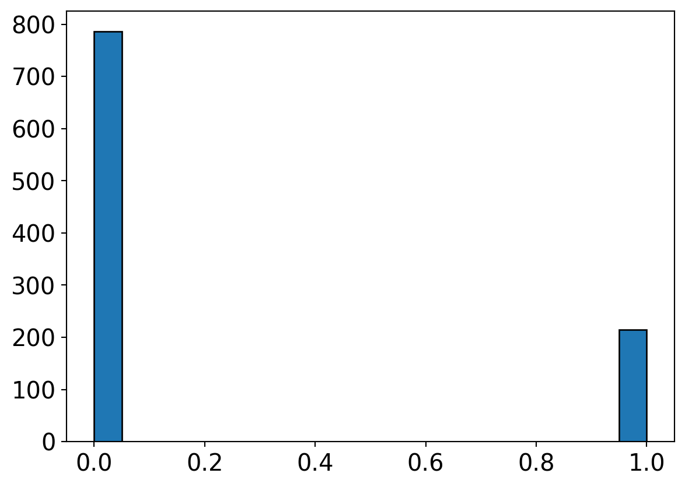
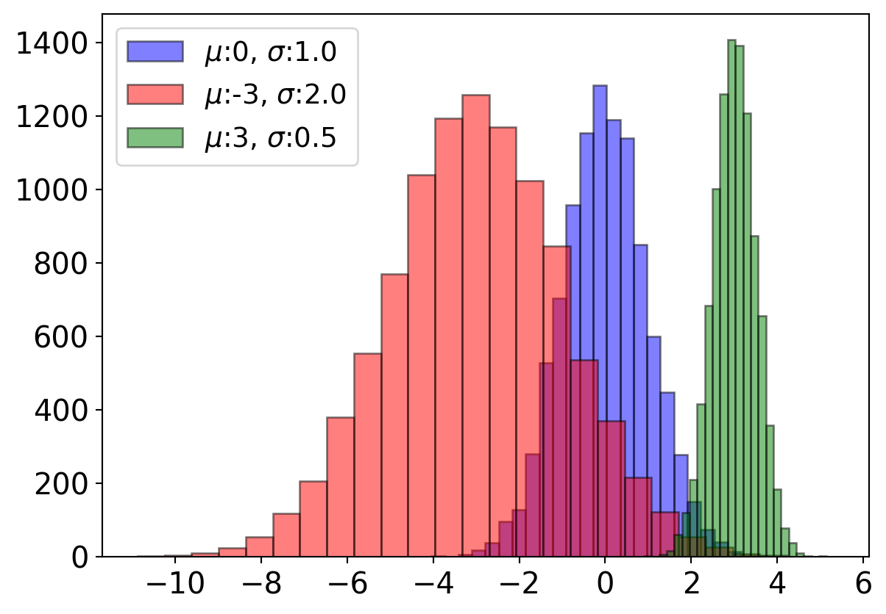
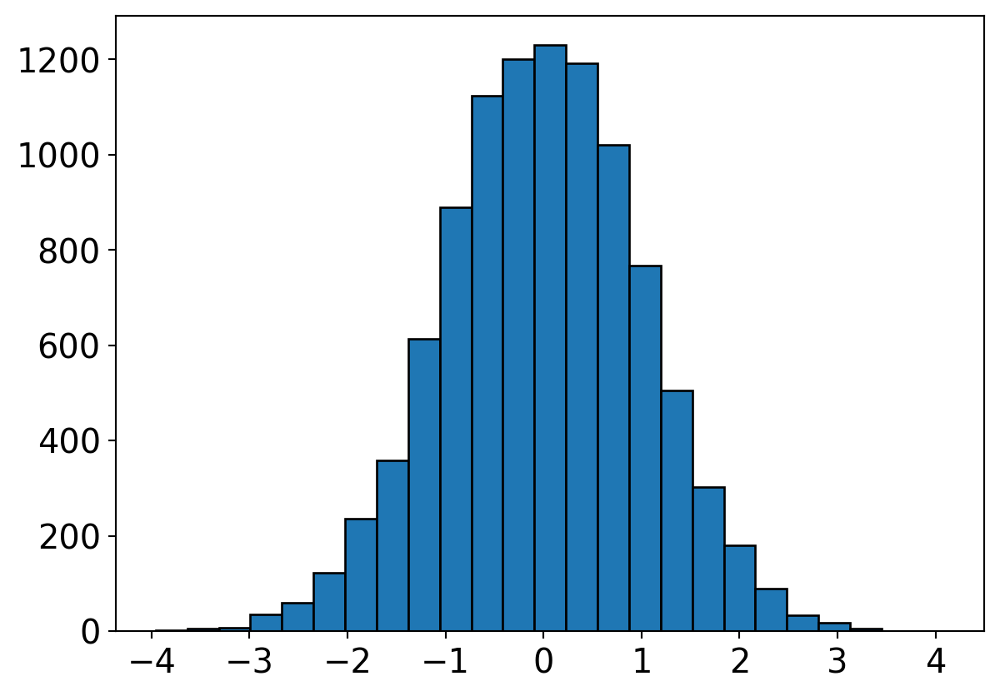
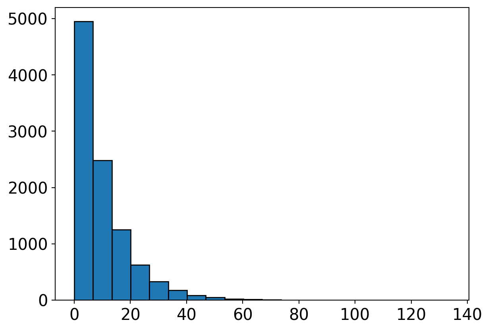

# importing required libraries
import logging
import pandas as pd
import numpy as np
import matplotlib.pyplot as plt
%matplotlib inline
from sklearn.cluster import KMeans
from collections import Counter
import time
logging.getLogger('sklearn').setLevel(logging.WARNING)Blog 3 – Random Variables
Generating random variables from scratch
Uniform random generator based on “Linear Congruential Generator”
We will first import the required libraries:
def pseudo_uniform_bad(mult=5,
mod=11,
seed=1,
size=1):
"""
A bad pseudo random generator with small multipliers and modulus
"""
U = np.zeros(size)
x = (seed*mult+1)%mod
U[0] = x/mod
for i in range(1,size):
x = (x*mult+1)%mod
U[i] = x/mod
return Ul=pseudo_uniform_bad(seed=3,size=1000)
plt.hist(l,bins=20,edgecolor='k')
plt.xticks(fontsize=15)
plt.yticks(fontsize=15)
plt.show()def pseudo_uniform_good(mult=16807,
mod=(2**31)-1,
seed=123456789,
size=1):
"""
A reasoanbly good pseudo random generator
"""
U = np.zeros(size)
x = (seed*mult+1)%mod
U[0] = x/mod
for i in range(1,size):
x = (x*mult+1)%mod
U[i] = x/mod
return Ul=pseudo_uniform_good(size=10000)
plt.hist(l,bins=20,edgecolor='k')
plt.xticks(fontsize=15)
plt.yticks(fontsize=15)
plt.show()Sample picker Distribution
def sample_pick(lst):
"""
Picks up a random sample from a given list
"""
# Sets seed based on the decimal portion of the current system clock
t = time.perf_counter()
seed = int(10**9*float(str(t-int(t))[0:]))
# Random sample as an index
l = len(lst)
s = pseudo_uniform(low=0,high=l,seed=seed,size=1)
idx = int(s)
return (lst[idx])
def pseudo_uniform(low=0,
high=1,
seed=123456789,
size=1):
"""
Generates uniformly random number between `low` and `high` limits
"""
return low+(high-low)*pseudo_uniform_good(seed=seed,size=size)
dice_faces = ['one','two','three','four','five','six']for _ in range(30):
print(sample_pick(dice_faces),end=', ')one, one, two, three, three, four, four, five, five, five, six, six, one, one, two, two, two, three, three, four, four, five, five, five, six, six, one, one, two, two, C:\Users\Sabarish M N\AppData\Local\Temp\ipykernel_36600\1321908839.py:11: DeprecationWarning:
Conversion of an array with ndim > 0 to a scalar is deprecated, and will error in future. Ensure you extract a single element from your array before performing this operation. (Deprecated NumPy 1.25.)
l = []
for _ in range(10000):
t = time.perf_counter()
seed = int(10**9*float(str(t-int(t))[0:]))
l.append(float(pseudo_uniform(0,6,seed=seed,size=1)))
plt.hist(l,bins=20,edgecolor='k')
plt.xticks(fontsize=15)
plt.yticks(fontsize=15)
plt.xlim(-1,7)
plt.show()C:\Users\Sabarish M N\AppData\Local\Temp\ipykernel_36600\3436541096.py:5: DeprecationWarning:
Conversion of an array with ndim > 0 to a scalar is deprecated, and will error in future. Ensure you extract a single element from your array before performing this operation. (Deprecated NumPy 1.25.)
Bernoulli Distribution
def pseudo_bernoulli(p=0.5,size=1):
"""
Bernoulli generator from uniform generator
"""
# Sets seed based on the decimal portion of the current system clock
t = time.perf_counter()
seed = int(10**9*float(str(t-int(t))[0:]))
B = pseudo_uniform(seed=seed,size=size)
B = (B<=p).astype(int)
return B
l=pseudo_bernoulli(p=0.2,size=1000)
plt.hist(l,bins=20,edgecolor='k')
plt.xticks(fontsize=15)
plt.yticks(fontsize=15)
plt.show()
Binomial Distribution
def pseudo_binomial(n=100,
p=0.5,
size=1):
"""
Binomial distribution from the Uniform generator
"""
binom = []
for _ in range(size):
t = time.perf_counter()
seed = int(10**9*float(str(t-int(t))[0:]))
U = pseudo_uniform(size=n,seed=seed)
Y = (U <= p).astype(int)
binom.append(np.sum(Y))
return binom
# 100 loaded coins, each with probability of head 0.75, are flipped
# This trial/experiment is repeated for 15 times
# The number of heads in each experiment are given below
pseudo_binomial(n=100,p=0.75,size=15)[67, 75, 67, 76, 74, 72, 75, 73, 81, 74, 80, 75, 75, 77, 76]Normal Distribution
def pseudo_normal(mu=0.0,sigma=1.0,size=1):
"""
Generates Normal distribution from the Uniform distribution using Box-Muller transform
"""
# A pair of Uniform distributions
t = time.perf_counter()
seed1 = int(10**9*float(str(t-int(t))[0:]))
U1 = pseudo_uniform(seed=seed1,size=size)
t = time.perf_counter()
seed2 = int(10**9*float(str(t-int(t))[0:]))
U2 = pseudo_uniform(seed=seed2,size=size)
# Standard Normal pair
Z0 = np.sqrt(-2*np.log(U1))*np.cos(2*np.pi*U2)
Z1 = np.sqrt(-2*np.log(U1))*np.sin(2*np.pi*U2)
# Scaling
Z0 = Z0*sigma+mu
return Z0
l1=pseudo_normal(size=10000)
plt.hist(l1,bins=25,edgecolor='k',alpha=0.5,color='blue')
l2=pseudo_normal(mu=-3,sigma=2.0,size=10000)
plt.hist(l2,bins=25,edgecolor='k',alpha=0.5,color='red')
l3=pseudo_normal(mu=3,sigma=0.5,size=10000)
plt.hist(l3,bins=25,edgecolor='k',alpha=0.5,color='green')
plt.xticks(fontsize=15)
plt.yticks(fontsize=15)
plt.legend(["$\mu$:0, $\sigma$:1.0",
"$\mu$:-3, $\sigma$:2.0",
"$\mu$:3, $\sigma$:0.5"],fontsize=14)
plt.show()<>:29: SyntaxWarning:
invalid escape sequence '\m'
<>:30: SyntaxWarning:
invalid escape sequence '\m'
<>:31: SyntaxWarning:
invalid escape sequence '\m'
<>:29: SyntaxWarning:
invalid escape sequence '\m'
<>:30: SyntaxWarning:
invalid escape sequence '\m'
<>:31: SyntaxWarning:
invalid escape sequence '\m'
C:\Users\Sabarish M N\AppData\Local\Temp\ipykernel_36600\1355573055.py:29: SyntaxWarning:
invalid escape sequence '\m'
C:\Users\Sabarish M N\AppData\Local\Temp\ipykernel_36600\1355573055.py:30: SyntaxWarning:
invalid escape sequence '\m'
C:\Users\Sabarish M N\AppData\Local\Temp\ipykernel_36600\1355573055.py:31: SyntaxWarning:
invalid escape sequence '\m'

l=pseudo_normal(size=10000)
plt.hist(l,bins=25,edgecolor='k')
plt.xticks(fontsize=15)
plt.yticks(fontsize=15)
plt.show()
Exponential Distribution
def pseudo_exp(lamb,size=1):
"""
Generates exponential distribution from the Uniform distribution
"""
t = time.perf_counter()
seed = int(10**9*float(str(t-int(t))[0:]))
U = pseudo_uniform(size=size,seed=seed)
X = -(1/lamb)*(np.log(1-U))
return X
l=pseudo_exp(lamb=0.1,size=10000)
plt.hist(l,bins=20,edgecolor='k')
plt.xticks(fontsize=15)
plt.yticks(fontsize=15)
plt.show()
Poisson Distribution
def pseudo_poisson(alpha,size=1):
"""
"""
poisson = []
for _ in range(size):
t = time.perf_counter()
seed = int(10**9*float(str(t-int(t))[0:]))
U = pseudo_uniform(seed=seed,size=5*alpha)
X,P,i = 0,1,0
while P >= np.exp(-alpha):
P = U[i]*P
X+=1
i+=1
poisson.append(X)
return np.array(poisson)
l1=pseudo_poisson(alpha=5,size=10000)
l2=pseudo_poisson(alpha=10,size=10000)
l3=pseudo_poisson(alpha=20,size=10000)
d1=dict(Counter(l1))
d2=dict(Counter(l2))
d3=dict(Counter(l3))
k1 = [k for k in d1.keys()]
v1 = [v for v in d1.values()]
k2 = [k for k in d2.keys()]
v2 = [v for v in d2.values()]
k3 = [k for k in d3.keys()]
v3 = [v for v in d3.values()]
# Plotting
plt.scatter(k1,v1,c='blue')
plt.scatter(k2,v2,c='k')
plt.scatter(k3,v3,c='green')
plt.legend(["Rate parameter "+"$\lambda$: "+str(i) for i in (5,10,20)],fontsize=15)
plt.xticks(fontsize=15)
plt.yticks(fontsize=15)
plt.show()<>:36: SyntaxWarning:
invalid escape sequence '\l'
<>:36: SyntaxWarning:
invalid escape sequence '\l'
C:\Users\Sabarish M N\AppData\Local\Temp\ipykernel_36600\2970150594.py:36: SyntaxWarning:
invalid escape sequence '\l'